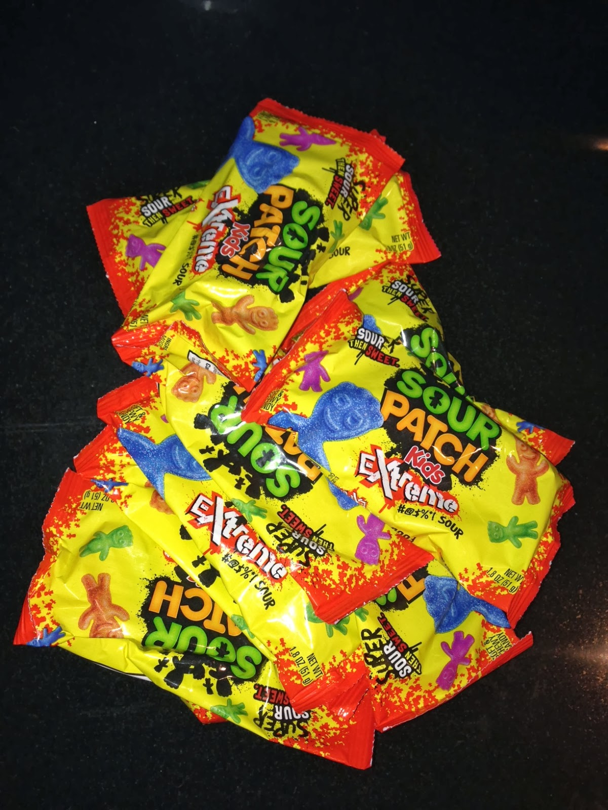
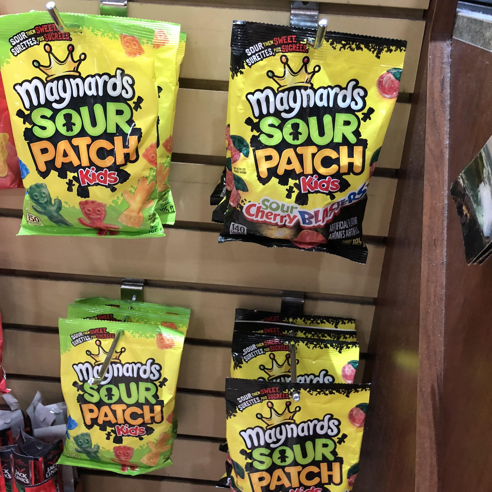
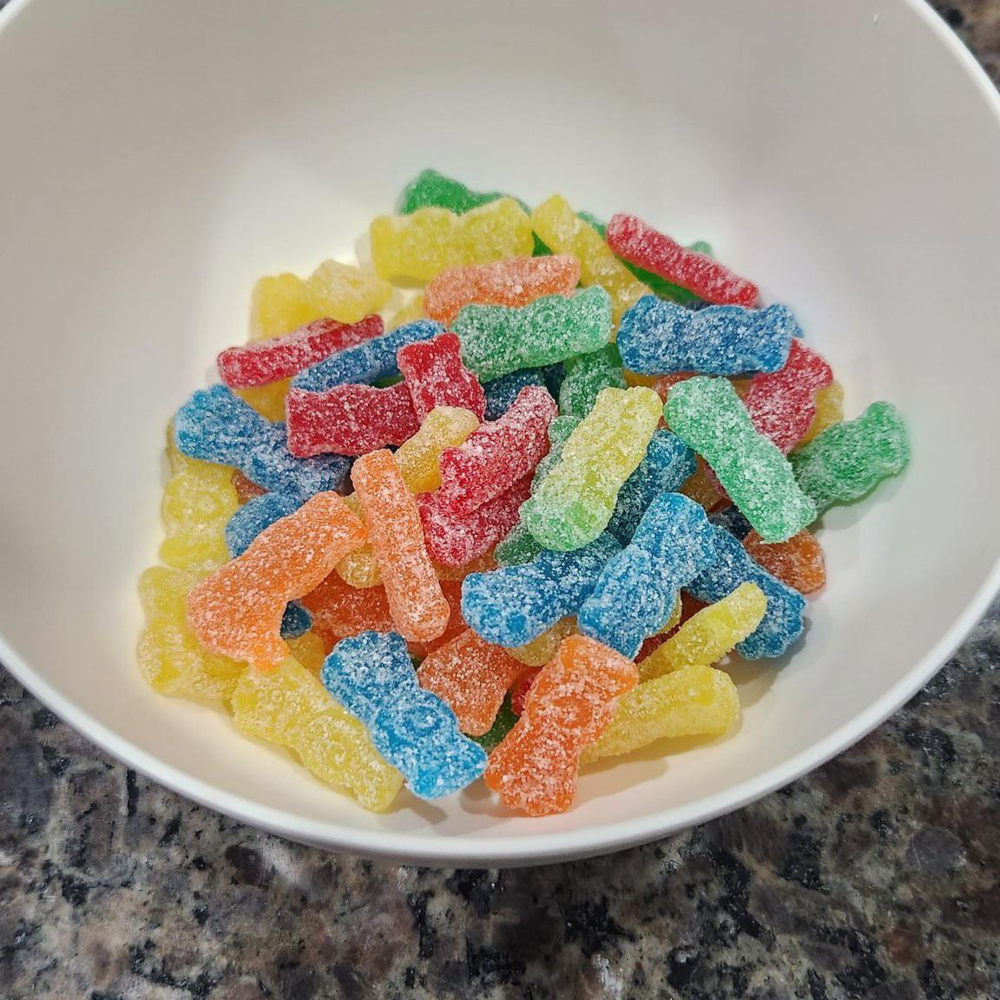

SOUR.SWEET.GONE
First they're sour. Then they're sweet.
About Sour Patch Kids
Sour Patch Kids (known as Very Bad Kids in France, and known as Maynards Sour Patch Kids in Canada and previously in the UK) are a brand of soft candy with a coating of invert sugar and sour sugar (a combination of citric acid, tartaric acid, and sugar). The tartaric and citric acids provide the candy with a sharp burst of tartness, while the inverted sugar gives the soft gummy its sweet flavor. Sour Patch Kids Extreme, which contains malic acid in addition to the tartaric and citric acids, is considered the sourest variation in the Sour Patch line of candies. The slogans "Sour Then Sweet" and "Sour. Sweet. Gone." refer to the candy's sour-to-sweet taste.
Gallery

